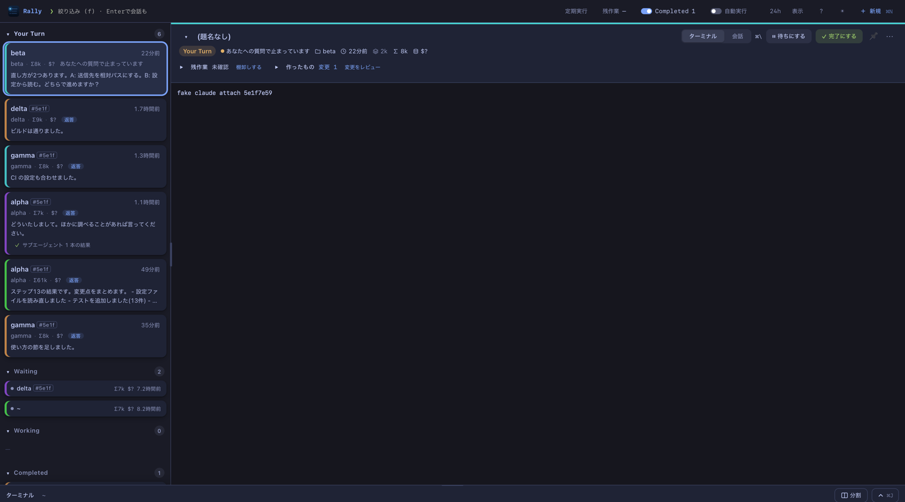

エージェントがいくつ動いていても、
次は誰の番かがひと目でわかる。
Claude Code を3つ、Codex を1つ、Cursor も横で — 手元で走っているコーディングエージェントのセッションを全部、1つのリストに並べます。どれがあなたの許可を待っていて、どれが作業中で、どれが止まったままなのか。見て、そのまま答え、そのセッションの本物のターミナルも横で開けます。
❯brew install --cask sue738/tap/rally

画面は架空のデータです
❯4つの列、ひとつの問い:誰の番?
Your Turn許可を待っている・質問している・返事をして止まった。いちばん上が、いちばんあなたを待っているもの。
Waiting6〜24時間動いていない。終わったのではなく、忘れられているかもしれないもの。
Workingいま書いている、サブエージェントが動いている、またはプロセスが作業中と言っている。
Completed完了にしたもの、1日以上前のもの、一度きり・自動で走ったもの。普段は隠れています。
分類は、各エージェントが手元に残している会話記録(~/.claude・~/.codex など)と、実行中のプロセスの状態(claude agents)から決めます。どこから起動したセッションでも拾います。ヘッダーの「表示」で、カードに出す項目(プロジェクト・モデル・Σトークン・API 換算の額・最後の発言など)を選べます。
❯できること
許可にその場で答える許可確認や質問が来ると、画面の隅に小さなカードが出ます(フォーカスは奪いません)。端末と同じ選択肢で、そこから答えられます。⌘Y で許可。
見たまま返事をするパネルの入力欄から、そのセッションの続きとして送信。「今の作業後に送る」なら空き次第に届きます。
本物のターミナルをパネルで
claude attach、止まっていればここで再開。Codex・Antigravity も。アプリを閉じても切り離すだけで、セッションは動き続けます。新しいセッションを始める⌘N。エージェント・フォルダ・モデル・権限モード(plan / 編集は許可 / auto)を選んで。worktree で分ける、×3 で並べる、Chrome を操作させる。
サブエージェントも親の下に動いているもの、返ってきた結果。クリックでその会話を読めます。
トークンと費用カードとパネルに Σ トークンと、API で払ったらいくらかの目安。Claude と Codex の 5時間・週の残りはヘッダーに。
通知と Dock バッジカードが Your Turn に来たら macOS の通知。クリックでそのカードが開きます。
変更をレビューD で、そのセッションが書いた・編集したファイルの差分を、プルリクエストのように並べて。
キーボードだけで⌘K パレット、↑↓ でカード、@ でファイル、/ でスキル、⌘C で送信の取り消し。一覧は ?、キーは変えられます。
❯入れ方
macOS のアプリ(リリースから dmg をダウンロードして Applications へ。初回だけ「システム設定 → プライバシーとセキュリティ → このまま開く」が要ります)。Homebrew なら:
brew install --cask sue738/tap/rally # 初回の確認も済ませます
ブラウザで使う(CLI だけ):
# Node 22.13 以上 npx github:sue738/rally # http://127.0.0.1:7331/ が開きます npx github:sue738/rally now # 同じ列をターミナルに
- 対応: Claude Code(許可への回答・送信・ターミナルまで)、Codex CLI・Antigravity(送信と開始、ターミナル)、Gemini CLI・Cursor(一覧のみ)
- アプリ版: macOS 14 以上。Node は同梱。⌥⌘K でどこからでも呼び出せます
- 許可に Rally で答える:
~/.claude/settings.jsonに PermissionRequest フックを足します(Rally はこのファイルを書き換えません。手順は README に) - データ: Rally が読むのは手元の会話記録だけで、書き込むのは
~/.rally/だけ。サーバーもアカウントもありません。題名づけと残作業の棚卸しは、あなた自身のclaudeCLI を呼んで行います(その分はあなたの利用枠を使います)